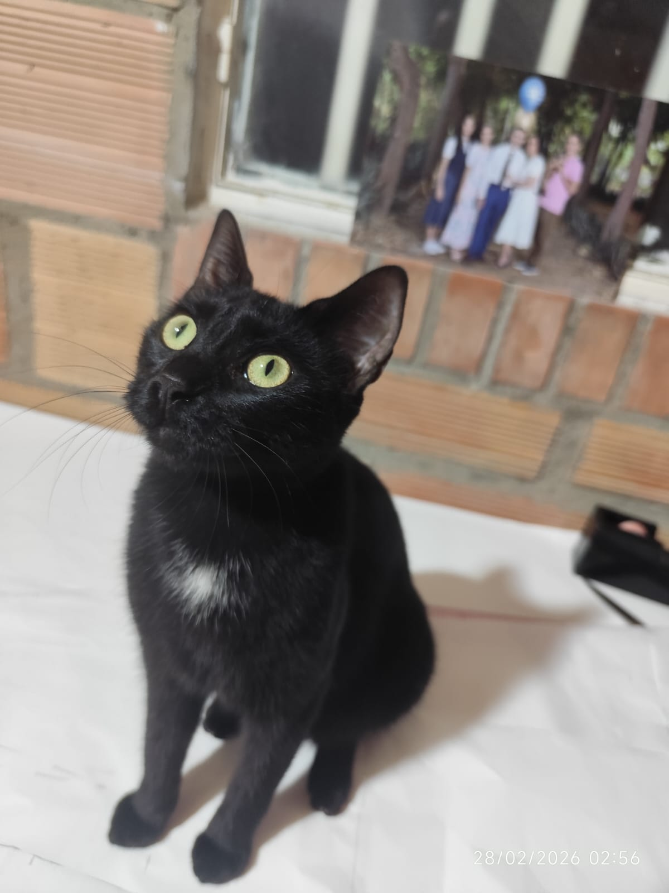
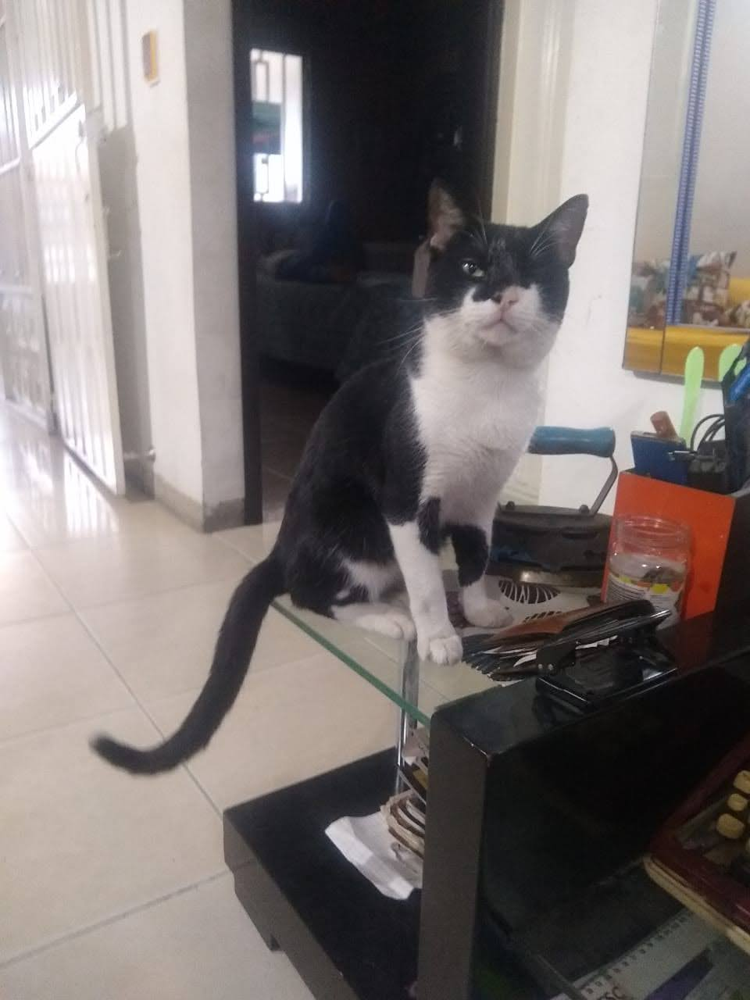
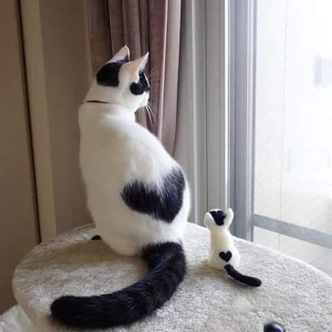
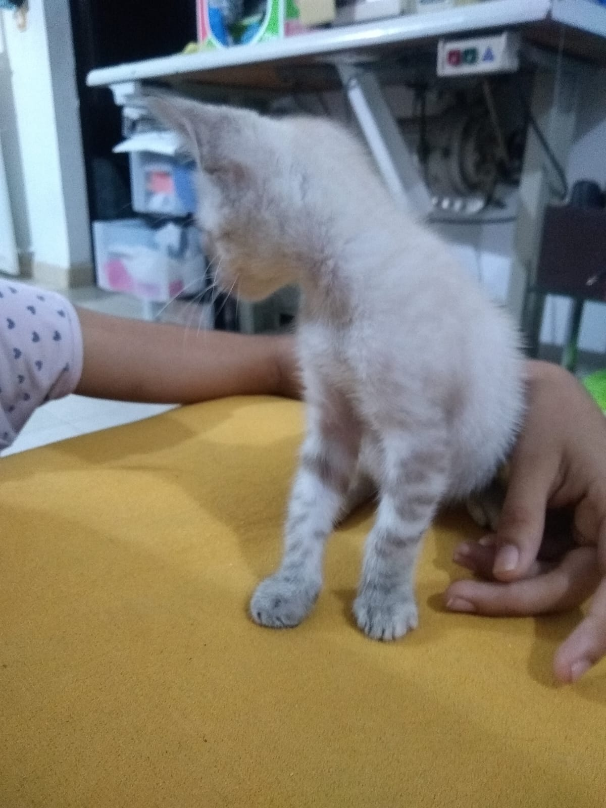
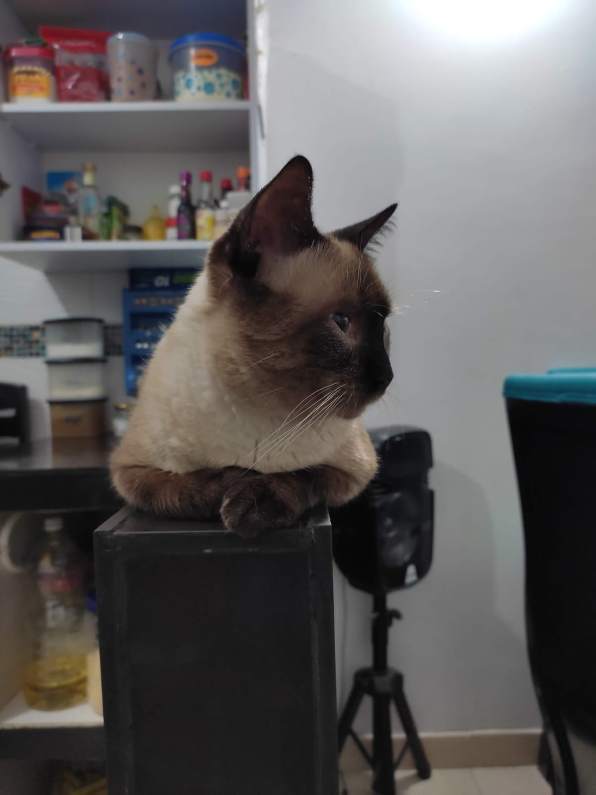
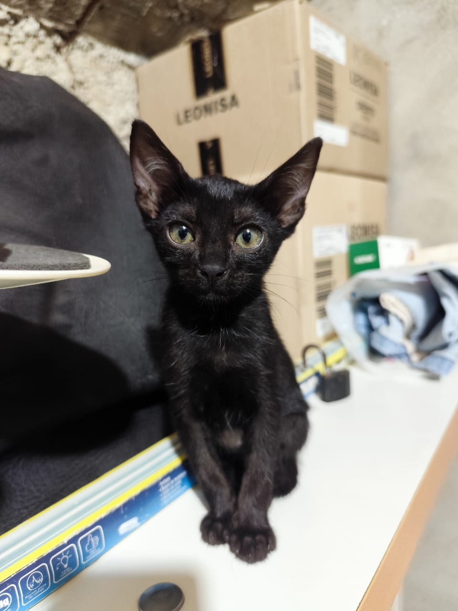
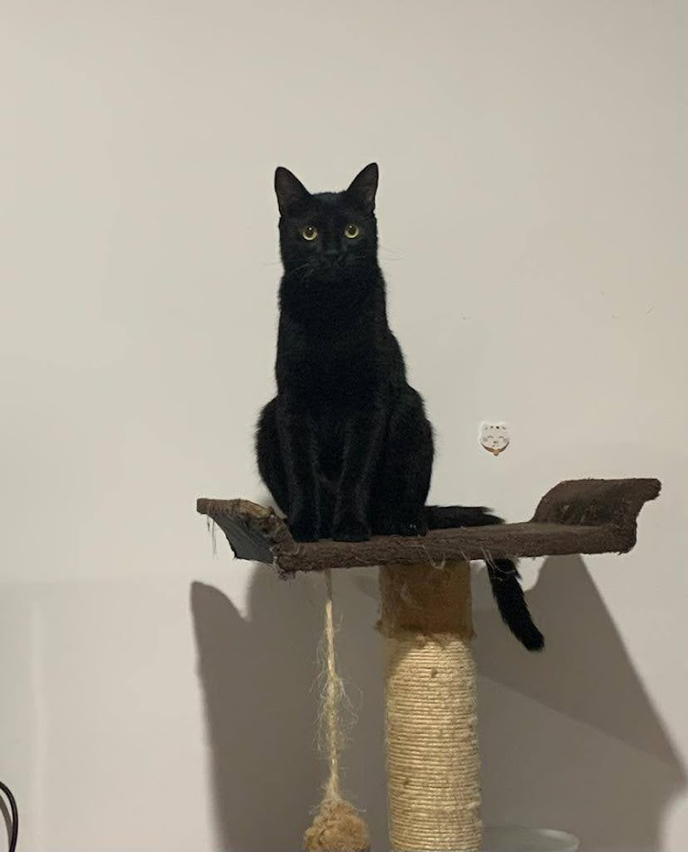
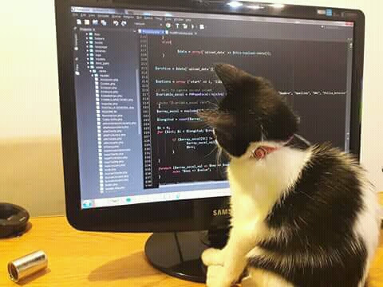

Edad: 1 año | Sexo: Hembra | Tamaño: Mediano
Negra es una gatita muy juguetona y curiosa, ama las cajas y los juguetes con cascabel, ha aprendido varios trucos como traer la pelota o pararse en dos patas, busca un hogar con mucho amor.

Edad: 5 años | Sexo: Macho | Tamaño: Grande
Peluso es un gato leal, tranquilo y excelente compañero para tardes de descanso. Le encanta estar en familia y recibir mimos en la barbilla.

Edad: 2 años | Sexo: Hembra | Tamaño: Mediano
Manchitas es una gata llena de energía y amor. Es muy sociable y le encanta perseguir juguetes de cuerda y trepar a rascadores altos.

Edad: 8 meses | Sexo: Macho | Tamaño: Pequeño
Un minino dulce y curioso que busca descubrir el mundo de la mano de una familia paciente. Es experto en cazar sombras.

Edad: 5 años | Sexo: Macho | Tamaño: Mediano
Amante de las siestas largas bajo los rayos del sol. Es un felino muy calmado, independiente y excelente para un hogar tranquilo.

Edad: 3 meses | Sexo: Hembra | Tamaño: Pequeño
Pequeña, traviesa y llena de vida. Esta gatita está lista para alegrar cualquier espacio con sus travesuras y ronroneos.

Edad: 4 años | Sexo: Macho | Tamaño: Grande
Manolo es un gato maduro, increíblemente tranquilo y bonachón. Le encanta acurrucarse cerca de ti mientras trabajas o estudias, y es el compañero ideal para un hogar pacífico que busque un amigo leal.

Edad: 5 meses | Sexo: Macho | Tamaño: Pequeño (Cachorro)
Linus es un pequeñín desbordante de curiosidad. Le fascina explorar cada rincón, perseguir pelotitas de papel y ronronear fuertemente en cuanto nota que lo estás mirando. ¡Llenará tu hogar de alegría!